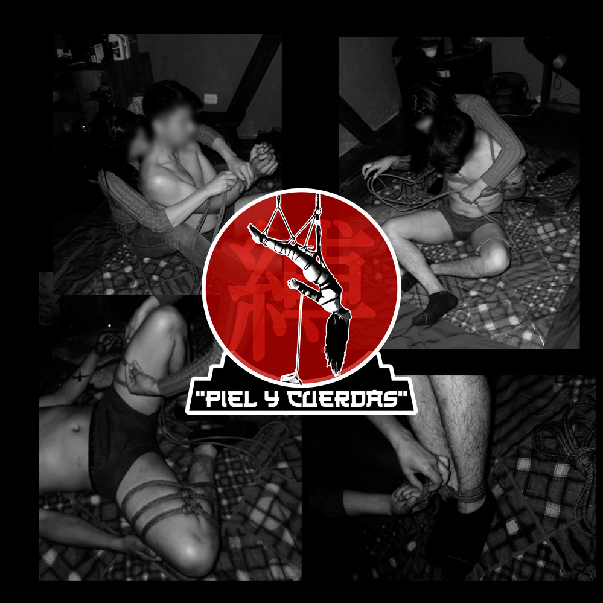
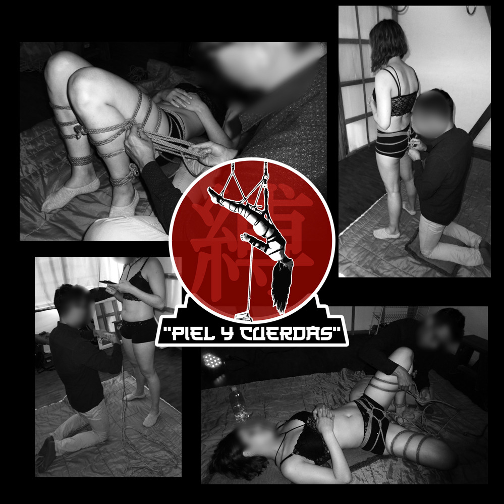
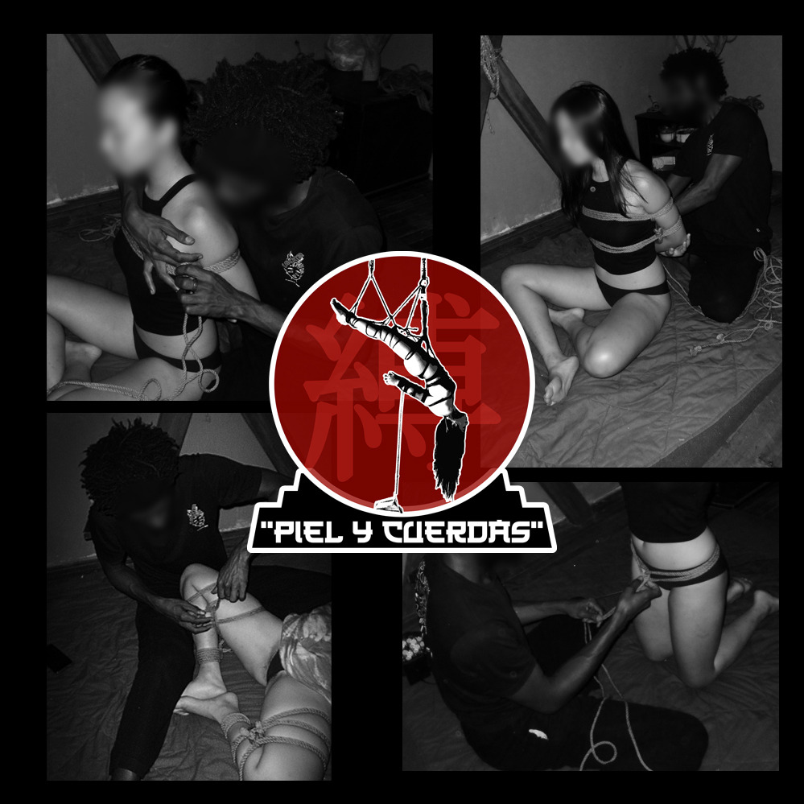

Galería
Registro de prácticas y talleres de Shibari realizados en Quito dentro del programa educativo de Piel y Cuerdas. Las imágenes muestran ejercicios de estructura de cuerda, práctica técnica y dinámicas de aprendizaje en un entorno controlado.


